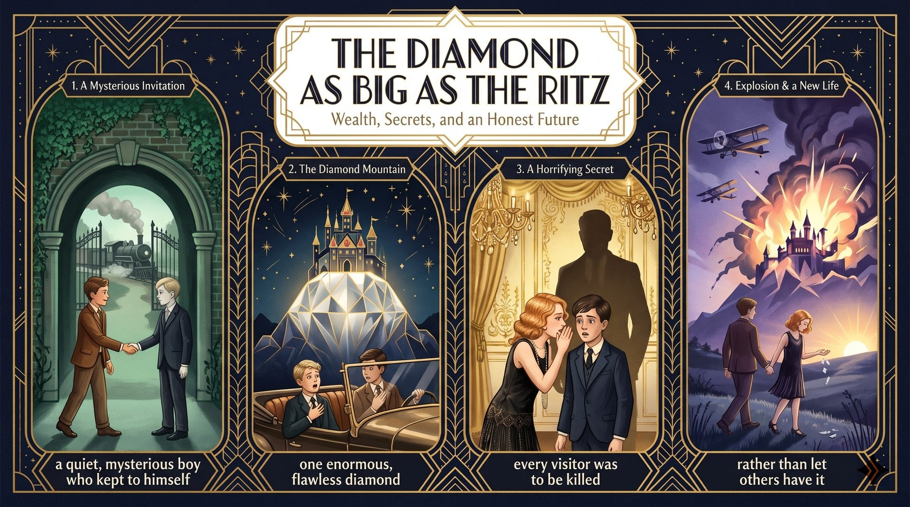

想像你在拜金小鎮長大，神祕的同學邀你去他家過暑假；漫長的火車旅程，你不知道會遇到什麼。
you are not sure what to expect珀西低聲說父親的鑽石比飯店還大；抵達時你倒抽一口氣，宏偉的城堡閃耀著寶石的光芒。
your breath catches in your throat幾週來你覺得像活在夢裡，直到珀西的妹妹吐露駭人的祕密：你永遠不可能活著離開。
you are never going to leave alive爆炸震動大地，老人寧可毀掉一切也不讓寶藏落入他人之手；兩手空空離開的你，會選哪一種人生？
rather than losing his treasure to othersImagine (V) + (that) you grew up in ... (O)，省略主詞 you。
called Hades 是分詞片語；, where everyone cares only about money 是非限定關係副詞子句。
Imagine (that) ... 是第二人稱開場句型；care about（在乎）；only 放在 about 前限定範圍。
Imagine（祈使句動詞）you grew up in a town called Hades,（受詞子句（省略 that））where everyone cares only about money.（非限定 where 子句）語塊 1（想像一下）➔ 語塊 2 調序（你在一個名叫黑帝斯的小鎮長大）➔ 語塊 3（那裡的人都只在乎錢）
開頭是 Imagine，對讀者說話，先翻「想像一下」。
Imagine (that)：Imagine 是動詞，右邊 you grew up in a town ... 是完整句 ➔ 名詞子句，that 省略。, where：左邊是地名 Hades，右邊 everyone cares only about money 完整 ➔ where。Imagine (that) S + V／Imagine + V-ing：Imagine living on the moon.Imagine you ...a mysterious classmate (S) + invites (V) + you (O)。
named Percy 是過去分詞片語修飾 classmate；to his home、for the summer 是介系詞片語。
named + 名字（名叫……的）；invite sb to + 地點。
One day,（時間副詞）a mysterious classmate named Percy（主詞＋分詞片語）invites you to his home for the summer.（動詞＋受詞＋地點＋時間）語塊 1（有一天）➔ 語塊 2 調序（一個名叫珀西的神祕同學）➔ 語塊 3（邀請你到他家過暑假）
One day 先翻，主詞是那位神祕同學。
named Percy 是過去分詞片語，等於 who is named Percy，把名字直接貼在 classmate 後面。a classmate. His name is Percy. 兩句，不如一個 named 搞定。
named＝called：a dog named Max。a ... named X invites you to ...The train journey (S) + feels (V) + endless (C)，and you (S) + are (V) + not sure what to expect (C)。
what to expect 是 wh- + to V 名詞片語。
feel + Adj.；what to expect（會遇到什麼）是常用片語。
The train journey feels endless,（主句一（連綴動詞））and you are not sure（主句二）what to expect.（what to V 名詞片語）語塊 1（火車旅程彷彿沒有盡頭）➔ 語塊 2（你也不確定）➔ 語塊 3（會遇到什麼）
兩個短句照順序翻，用「也」把兩句接起來。
and：左右都是完整句，對等連接。what to expect：wh- + to V，等於 what you should expect，當 sure 後面的受詞。feels endless：feel 是連綴動詞，接形容詞，不能寫 endlessly。
what／how／where + to V：I don't know what to say.You are not sure what to expect.Percy (S) + whispers (V) + that his father owns ... (O)。
whisper that ...（低聲說）；a famous hotel 指麗池卡爾頓。
Then Percy whispers that（主句＋名詞子句連接詞）his father owns a diamond（名詞子句）bigger than a famous hotel.（後位修飾（比較級））語塊 1（接著，珀西低聲告訴你）➔ 語塊 2（他父親擁有一顆）➔ 語塊 3 提前（比一家知名飯店還大的）➔ 鑽石
Then 帶出下一個情節，先翻「接著」。
whispers；往右看——his father owns a diamond ... 完整 ➔ 名詞子句 that。bigger than a famous hotel 是形容詞片語後位修飾 diamond，等於 which is bigger than ...。
whisper (to sb) that ...：She whispered to me that ...Then he whispers that ...your breath (S) + catches (V)，冒號後 a magnificent castle (S) + sparkles (V)。
When you arrive 是時間子句；冒號後說明讓你倒抽一口氣的景象。
one's breath catches in one's throat（倒抽一口氣）；sparkle with precious stones（閃耀著寶石的光芒）。
When you arrive,（時間副詞子句）your breath catches in your throat:（主句（慣用語））a magnificent castle sparkles（冒號後說明句）with precious stones.（介系詞片語）語塊 1（抵達的那一刻）➔ 語塊 2（你倒抽了一口氣）➔ 語塊 3（一座宏偉的城堡閃耀著）➔ 語塊 4 嵌入（寶石的光芒）
時間子句先翻，用「那一刻」拉近距離。
When：句首時間子句，右邊完整。:：前面說「你倒抽一口氣」，後面揭曉「為什麼」——因為看見了城堡。冒號在這裡等於 because，但更有戲劇效果。
precious stone＝gem（寶石）；precious metal（貴金屬）。When you arrive, your breath catches in your throat.you (S) + feel like (V) + you are living in a dream (O)。
For weeks 是時間片語；feel like 後接子句，like＝as if。
for weeks（好幾週）；feel like + S + V（覺得好像）。
For weeks,（時間片語）you feel like（主句）you are living in a dream.（子句（進行式））語塊 1（接下來好幾週）➔ 語塊 2（你都覺得）➔ 語塊 3（自己彷彿活在夢裡）
For weeks 先翻，交代時間跨度。
you are living in a dream 是完整句，like 等於 as if，譯「覺得好像」。如果右邊是 V-ing（feel like living here forever），就變成「想要」。
for weeks／for years（好幾週／好幾年）。For weeks, you feel like ...Percy's sister (S) + confesses (V) + a horrifying secret (O)，破折號後說明祕密。
confess（吐露）；be going to（將要）；never 強調「永遠不」。
But one night,（轉折＋時間）Percy's sister confesses a horrifying secret（主幹）—you are never going to leave alive.（破折號說明）語塊 1（但某天夜裡）➔ 語塊 2（珀西的妹妹吐露了一個駭人的祕密）➔ 語塊 3（你永遠不可能【活著】離開）
But 一出來氣氛就轉了，先翻「但某天夜裡」。
But：句首轉折，把上一句的美夢推翻。—：等於冒號，後面直接說明祕密是什麼。這裡改用第二人稱 you，讓讀者直接感受到「被判死刑」的衝擊。
be going to + V：表將要或注定。—you are never going to ...explosions (S) + shake (V) + the ground (O)，and bombs (S) + begin (V) + to fall (O)。
begin to V。
shake the ground（震動大地）；begin to V／V-ing（開始……）。
Suddenly,（副詞）explosions shake the ground,（主句一）and bombs begin to fall.（主句二）語塊 1（突然間）➔ 語塊 2（爆炸震動大地）➔ 語塊 3（炸彈開始落下）
Suddenly 先翻，後面兩個畫面照順序。
explosions shake the ground、bombs begin to fall ➔ and 是對等連接詞，同時呈現兩個畫面，節奏很快。
begin／start + to V／V-ing，意思相同。Suddenly, ... shake the ground, and ...You (S) + watch (V) + the old man (O) + beg for mercy (OC)。
beg for mercy（乞求憐憫）；in vain（徒勞）。
You watch the old man（主幹（感官動詞））beg for mercy（受詞補語（原形 V））in vain.（副詞片語）語塊 1（你看著那位老人）➔ 語塊 3 提前（徒勞地）➔ 語塊 2（乞求憐憫）
照順序翻，你看著老人做什麼。
watch the old man beg：感官動詞 watch＋受詞＋原形 V，表示看完整個乞求的過程。in vain＝without success；try in vain（白費力氣）。You watch him beg for mercy in vain.he (S) + destroys (V) + the entire mountain (O)，句首 Rather than losing ... 是介系詞片語。
Rather than losing his treasure to others：rather than 作介系詞，後接 V-ing，相當於 instead of。
lose A to B（讓 A 落入 B 手中）；entire（整個的）。
Rather than losing his treasure to others,（介系詞 rather than＋V-ing）he destroys the entire mountain.（主幹）語塊 1（與其讓寶藏落入別人手中）➔ 語塊 2（他寧可摧毀整座山）
句首就是 Rather than，先翻「與其」。
Rather than 放句首、後面接 losing，這時它是介系詞，等於 Instead of losing。chose to blow up ... rather than let ...：放在句中、連接兩個對等原形動詞時是連接詞。
Rather than V-ing, S + V＝Instead of V-ing, S + V。Rather than ..., he ...would you (S) + choose (V) + wealth or an honest life (O)。
As you walk away with nothing 是 as 引導的時間子句；or 連接兩個選項。
walk away with nothing（兩手空空離開）；choose A or B。
As you walk away with nothing,（as 時間子句）would you choose（主句（疑問））wealth or an honest life?（受詞（選擇））語塊 1（當你兩手空空地離開時）➔ 語塊 2（你會選擇）➔ 語塊 3（財富，還是誠實的人生？）
As 子句先翻，交代你離開時的處境。
As：右邊 you walk away with nothing 是完整句 ➔ 連接詞，表「當……時」。or：在問句中連接兩個名詞選項，譯「還是」，不是「或」。Would you like tea or coffee?（語調先升後降）Would you choose A or B?1. 請選出最適合填入 (1) 的字：
where。2. 請選出最適合填入 (2) 的字：
mysterious。3. 請選出最適合填入 (3) 的字：
what to expect（會遇到什麼）；if、that 不接 to V。4. 請選出最適合填入 (4) 的字：
feel like + S + V（覺得好像）。5. 請選出最適合填入 (5) 的字：
Rather than 作介系詞，後接 V-ing。6. After climbing to the top of the hill, I stopped to catch my ________.
catch one's breath（喘口氣）。7. The museum keeps many ________ stones, such as rubies and diamonds.
precious stones（寶石）。8. The loud ________ broke all the windows on the street.
explosion。9. The thief finally ________ to the police that he had stolen the money.
confess that ...（坦承）。10. 下列哪一句文法正確？
11. 「你看著那位老人徒勞地乞求憐憫。」最佳英譯是：
12. 下列哪一句文法正確？
what to V；if 不接 to V。13. How do you feel during the train journey?
14. What secret does Percy's sister reveal?
15. What does the writer want readers to think about at the end?